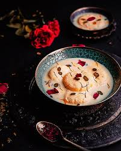
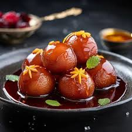
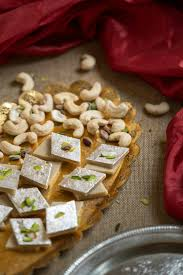
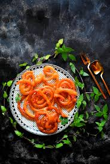
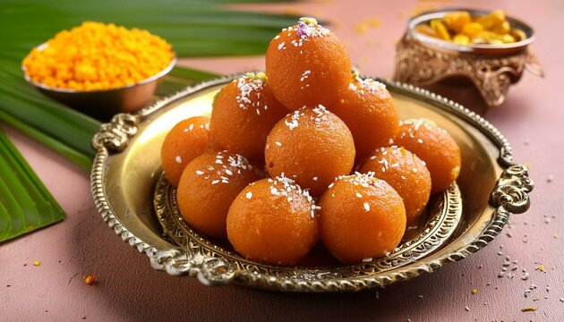

Rasmalai
Ingredients
- Flour
- Paneer
- Sooji (Semolina)
- Nestlé MILKMAID
- Baking Powder
- Baking Soda
Recipe
- Mix the ingredients to form a dough.
- Shape the dough into small round pieces.
- Cook the pieces in water and milk mixture to make them soft.
- Chill and serve with syrup made from sugar and milk.

Gulab Jamun
Ingredients
- Milk Powder
- Flour
- Ghee (Clarified Butter)
- Sugar
- Baking Soda
- Cardamom
Recipe
- Mix milk powder, flour, ghee, and baking soda to form a dough.
- Shape the dough into small round balls.
- Fry the balls in ghee until golden brown.
- Soak the fried balls in warm sugar syrup flavored with cardamom.

Kaju Katli
Ingredients
- Cashews
- Sugar
- Water
- Ghee (Clarified Butter)
- Cardamom
Recipe
- Grind cashews into a fine powder.
- Make sugar syrup by boiling sugar and water.
- Add cashew powder to the syrup and cook until it thickens.
- Pour the mixture onto a plate, flatten it, and let it cool. Cut into diamond-shaped pieces.

Jalebi
Ingredients
- Flour
- Sugar
- Yeast
- Water
- Cardamom Powder
- Ghee (Clarified Butter)
Recipe
- Mix flour, yeast, and water to make a batter and let it rise.
- Heat ghee in a pan and pipe the batter into the oil in a spiral shape.
- Fry until golden brown and then dip in warm sugar syrup flavored with cardamom.
- Serve hot and enjoy the crispy, sweet jalebis!

Motichur Laddu
Ingredients
- Besan (Chickpea Flour)
- Sugar
- Ghee (Clarified Butter)
- Cardamom Powder
- Cashews and Raisins
Recipe
- Roast besan in ghee until it turns golden brown.
- Add sugar, cardamom powder, and water to make a thick mixture.
- Mix in roasted cashews and raisins, then shape the mixture into small round laddus.
- Let them cool and serve.
